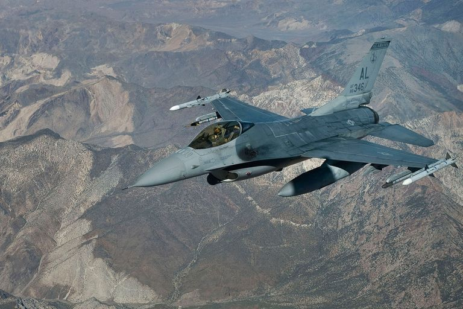

Министр иностранных дел Нидерландов Вопке Гукстра сообщил, что нидерландское правительство рассмотрит возможность поставки истребителей F-16, если Киев об этом попросит. Он отметил, что у Нидерландов нет никаких табу по передаче истребителей.
Украина давно стремится получить истребители, однако передачу современных самолетов усложняют несколько факторов. В частности, логистика, а точнее отсутствие в Украине адаптированных взлетных полос, обучение пилотов, которое занимает время, а также решение союзников.
Если на первые два фактора Украина может влиять и решает проблемы, побороть табу партнеров сложнее. На Западе есть опасения, что передача Украине самолетов – это все еще красная линия, которую нельзя переступать, иначе ответит Кремль. Однако эти опасения уменьшаются на фоне успехов Сил обороны.
Характеристики и история F-16
Истребители F-16 находятся на вооружении 24 стран мира. По состоянию на 2009 год было построено 4400 таких воздушных судов. В 2016 году в эксплуатации находилось 2 500 "Файтинг Фелкон". Истребители уже не строятся для ВВС США, однако их производят для экспорта. Самолеты F-16 начали становиться на вооружение ВВС США с 1978 годa.
F-16 – это моноплан со средне расположенным крылом и двигателем в хвостовой части фюзеляжа. Фюзеляж типа полумонокок цельнометаллический с однокилевым оперением. Плавное сопряжение крыла и фюзеляжа позволяет обеспечить создание фюзеляжем дополнительной подъемной силы на больших углах атаки. Конструкция на 78,3% выполнена из алюминиевых сплавов, 4,2% составляют титановые сплавы, 4,2% – углепластик и 3,7% – сталь. Для обеспечения простоты эксплуатации самолет имеет 228 люков и съемных панелей. Двигатель имеет под фюзеляжный воздухозаборник. Кабина оборудована регенеративной системой кондиционирования и наддува. Катапультируемое кресло фирмы "Макдоннелл-Дуглас" ACESII обеспечивает покидание самолета на стоянке и в полете при скорости 1100 километров в час на высотах до 15 000 метров. Система управления самолетом – электродистанционная с четырехкратным резервированием.
Распределение количества F-16 по модификациям следующее:
- F-16A/B Block 1/5/10 – 600 единиц,
- F-16A/B Block 15 – 983 единицы,
- F-16A/B Block 20 – 150 единиц,
- F-16C/D Block 25 (с 1984 года) – 244 единицы,
- F-16C/D Block 30/32 – 733 единицы,
- F-16C/D Block 40/42 – 615 единиц,
- F-16C/D Block 50/52 – 830 единиц,
- F-16C/D Block 50/52 Plus – около 300 единиц,
- F-16E/F Block 60 – 80 единиц,
- F-16V Block 70/72 – около 130 единиц заказано
Как писал "Милитарный", в течение своей жизни, уже стоящие на вооружении F-16 получали пакетные программы модернизации. Они назывались Mid-Life Update (MLU). Первый пакет разработан в начале 90-х годов для того, чтобы подтянуть боевые возможности F-16A/B до уровня F-16C/D Block 50/52, в первую очередь улучшить надежность и ремонтопригодность самолетов. Первыми покупателями этого набора модернизации выступили Бельгия, Дания, Нидерланды, Норвегия и Португалия. В дальнейшем список стран, модернизирующих свои самолеты согласно разным пакетам, только расширялся. Начальная модернизация M3 tape охватывала интеграцию Link-16, бомб с GPS коррекцией GBU-30/32, нашлемную систему индикации, модернизацию радара путем установки нового бортового вычислителя.
В дальнейшем стали доступны следующие пакеты модернизации:
- M4 tape – интеграция ракет класса "воздух-воздух" ближнего боя AIM-9X и IRIS-T, продвинутого Link-16, прицельного контейнера SNIPER и повышения его возможностей, обновление прицельной системы для противорадиолокационных ракет HTS.
- M5 tape – интеграция тактических планирующих управляемых авиабомб AGM-154 JSOW, авиабомб с лазерной наводкой EGBU-12, более устойчивых к помехам GPS/ИНС, обновленный Link-16, дополнительные системы коммуникации и вооружений.
- M6 tape – интеграция новой системы "свой-чужой", ракет "воздух-воздух" средней дальности AIM-120D, высокоточных авиабомб GBU-39, GBU-54 JDAM, обновленный Link-16, системы избегания столкновения с землей, улучшенные пилоны BRU-69, обновление определенных систем коммуникации и контроля систем.
- M7 tape – интеграция радара с АФАР AN/APG-83, последние модификации AIM-120D, JASSM-ER, модернизация систем коммуникации и управления.
Сколько стоит F-16
Скорее всего, Украина надеется, что получит современные истребители в качестве военной помощи. "Милитарный" привел ориентировочную стоимость модернизированных F-16 в разных странах мира. Греция – модернизация 84 единиц F-16 block 30 и block 50 до уровня F-16V Block 70/72, то есть M7 tape пакет по цене 1,5 миллиарда долларов, то есть около 18 миллионов долларов за единицу. Сингапур – 60 единиц F-16C/D Block 52 и Advanced Block 52 по цене 17 миллионов долларов за единицу за пакет модернизации M7 tape. Румыния – после получения последнего из 17 F-16A/B Block 20 MLU M5.2R, все они будут модернизированы до уровня M6XR. На модернизацию и логистическую поддержку этого флота уже получено согласие правительства США за 175 миллионов долларов.
Для сравнения ориентировочная стоимость нового самолета F-16V Block 70/72 (у производителя) – 64 миллиона долларов без учета вооружения, подготовки персонала и сопутствующих расходов. Как отмечает "Милитарный", по цене 20 – 30 миллионов долларов можно купить отремонтированные и модернизированные не до самого высокого уровня самолеты F-16A/B, которым уже около 35 лет.
Сколько времени необходимо для того, чтобы научиться пилотировать F-16
Как пишет Defense Express, US Air Force описал сроки обучения на самолетах F-16. К базовому курсу подготовки будущих пилотов F-16 допускаются пилоты, которые уже прошли шестимесячную подготовку на турбовинтовой Т-6 и семимесячную на реактивном Т-38 Talon, а также 1,5-2 месячную тренировку на AT-38. Последнее, судя по всему, связано уже с получением навыков использования вооружения. Для украинских пилотов проходить полноценное обучение на тренировочных самолетах Т-6 и Т-38 уже нет необходимости, потому что они предназначены для получения базовых навыков пилотирования вообще. Поэтому можно перейти на обучение F-16. Учеба на F-16 состоит из 5 последовательных этапов. На первом месяце проходят исключительно академические учения по изучению основных систем F-16 и аварийных процедур.
Затем начинается "переходный этап": обучение на авиасимуляторе, обычно их восемь, охватывающих исключительно получение навыков по пилотированию и действиям в аварийных ситуациях. После этого четыре вылета на двухместном F-16D и первый одноместный на F-16C. Затем еще 6 вылетов, включая ночные и групповые полеты, а также контрольный, во время которого проверяются все навыки пилотирования. Только после этого пилот получит статус допущенного к пилотированию F-16 в любых погодных условиях. Боевая подготовка на F-16 предполагает курс "воздух-воздух": 26 вылетов, с отработкой использования вооружения, тактики повторного боя на разных дистанциях, включая ближний маневровый. Курс "воздух-земля": 26 вылетов, с полетами на сверхмалой высоте, отработка разнообразным вооружением и получение тактических навыков. Но на этом учения не заканчиваются, поскольку есть еще отдельный месячный курс по уничтожению противовоздушной обороны противника и проходит он исключительно на F-16 Block 50, с применением систем уже исключительно боевого самолета.
Длительность курса пилотирования F-16 составляет девять месяцев. И речь идет о базовой подготовке военных лётчиков. Курс для украинских пилотов может быть пересмотрен и сокращен. Но, как сообщил спикер Воздушных Сил ВСУ Юрий Игнат, даже в таком случае речь бы шла о шести месяцах.
Как F-16 могут помочь Украине
F-16 стали эффективны против крылатых ракет, которым Россия массированно атакует Украину, и могут прицелиться в больше целей, чем способны поразить. Об этом сообщало издание Air Force Magazine. Воздушные Силы США и Northrop Grumman завершили пятилетний процесс модернизации 72 истребителей F-16 для Национальной гвардии США радарами пятого поколения. Благодаря новым радарам, истребители смогут отслеживать больше целей на больших дальностях и с большей точностью. По словам подрядчика, новые радары с активной решеткой с электронным сканированием (AESA) созданы на основе радаров, которые Northrop Grumman установила на F-22 и F-35. Предыдущий радар управления огнем APG-68 F-16 мог отслеживать не больше двух объектов одновременно, а с новым радаром пилот может "прицелиться в больше целей, чем может поразить".
Старые радары также имели "почти нулевые возможности" против крылатых ракет, что было "особо тревожно", учитывая распространение таких ракет в последние годы. В то же время, эти 72 истребителя F-16 будут не единственными в США, которые получат радары пятого поколения – в ближайшие годы еще сотни самолетов получат комбинированный пакет модернизации, предусматривающий в том числе и установку радаров AESA.
Как быстро можно развернуть эскадрилью F-16 в Украине
Офицер ВС Азербайджана военный аналитик Агиль Рустамадзе в интервью НВ выразил мнение, что при определенных условиях Украина могла бы достаточно быстро развернуть у себя эскадрилью истребителей F-16 в течение трех месяцев на базе гражданского аэропорта и в течение как минимум шести – на базе военного аэродрома. Прежде всего он замечает, что основная преграда оснащения ПС ВСУ современными самолетами – это отсутствие необходимой инфраструктуры, которая "требует совсем других аэродромов и технических средств". Хотя министр обороны Алексей Резников летом информировал, что проблема с аэродромной инфраструктурой Воздушных Сил Украины, которая является преградой в получении западных истребителей, может быть решена.
Рустамадзе считает, что ограниченно эти самолеты могут использовать инфраструктуру Польши, а в Украине гражданские аэродромы, которые можно переподготовить в течение 1-3 месяцев. "С ограничениями, но можно будет использовать гражданский аэропорт, например, в Киеве, чтобы развернуть эскадрилью и начать использовать. Эскадрилья F-16, где каждый самолет будет брать по три ракеты дальностью 250 километров – 36 самолетов взлетает, там около 100 ракет дальностью 250 километров – и вы получите очень мощный ударный кулак", – отметил Рустамадзе. Для военных аэродромов этот срок увеличивается в три раза – на его подготовку уйдет не менее 6 месяцев.